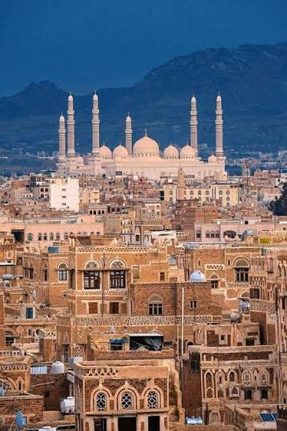
تاريخية 01
SANAA
صنعاء
مدينة التاريخ والأصالة، بعمارتها اليمنية العريقة وأسواقها وأزقتها القديمة.
اكتشف صنعاء ←
تاريخية 01مدينة التاريخ والأصالة، بعمارتها اليمنية العريقة وأسواقها وأزقتها القديمة.
اكتشف صنعاء ←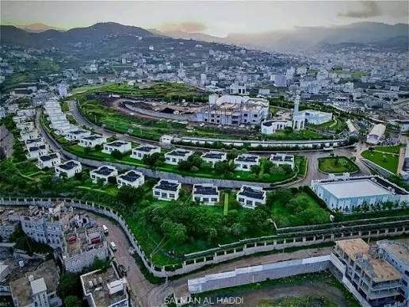
خضراء 02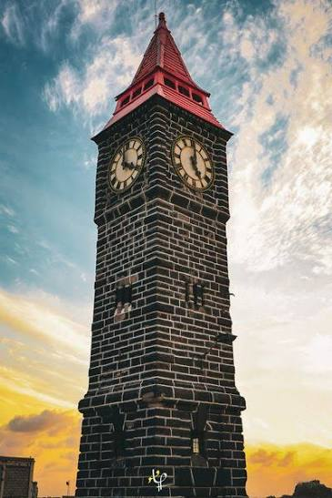
ساحلية 03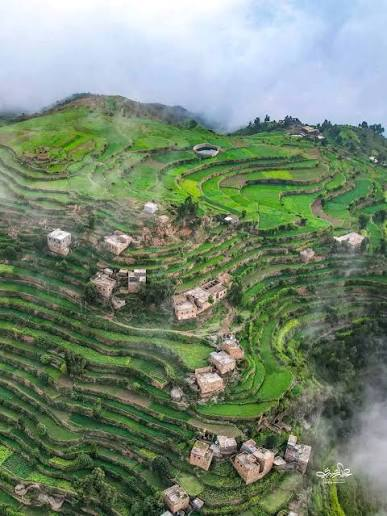
جبلية 04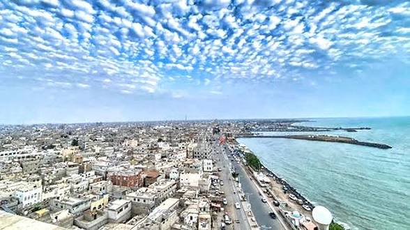
ساحلية 05مدينة ساحلية على البحر الأحمر، معروفة بطابعها البحري وأسواقها وحياتها الساحلية.
اكتشف الحديدة ←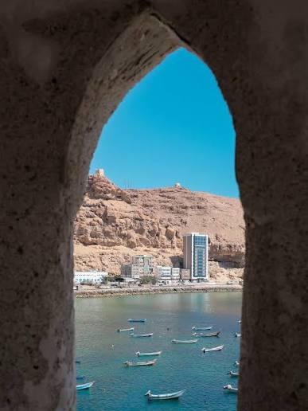
ساحلية 06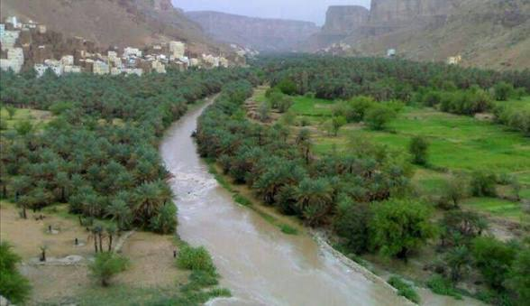
تراثية 07حضرموت، موطن مدن تاريخية وعمارة طينية مميزة، تمتد بين الوادي والساحل والصحراء.
اكتشف حضرموت ←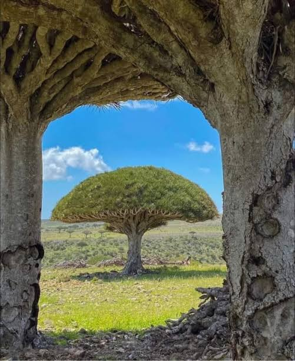
جزيرة 08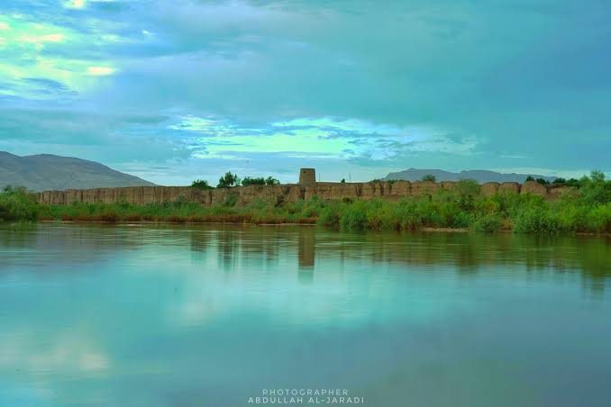
تاريخية 09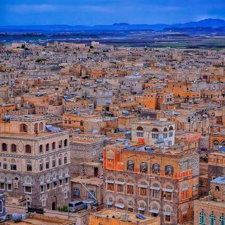
جبلية 10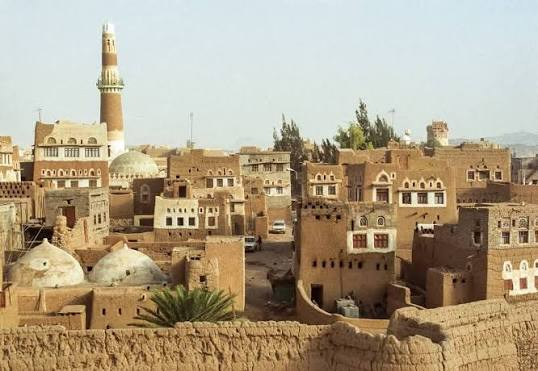
تاريخية 11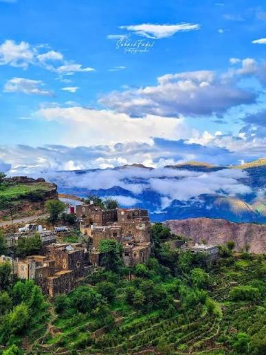
جبلية 12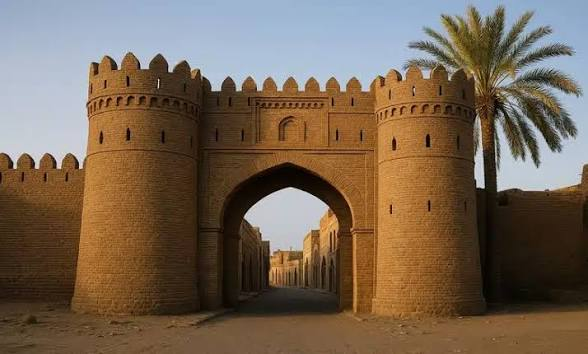
تاريخية 13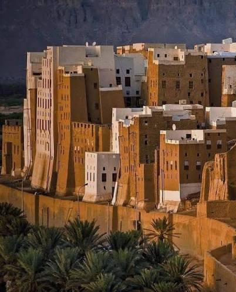
تراثية 14مدينة حضرمية شهيرة بعمارتها الطينية الشاهقة وتخطيطها الحضري المميز.
اكتشف شبام حضرموت ←جرّب اسمًا آخر أو اضغط «الكل» لإظهار جميع المدن.
مدينة التاريخ والأصالة، بعمارتها اليمنية العريقة وأسواقها وأزقتها القديمة.
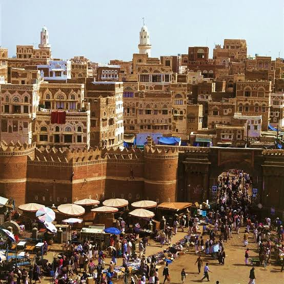
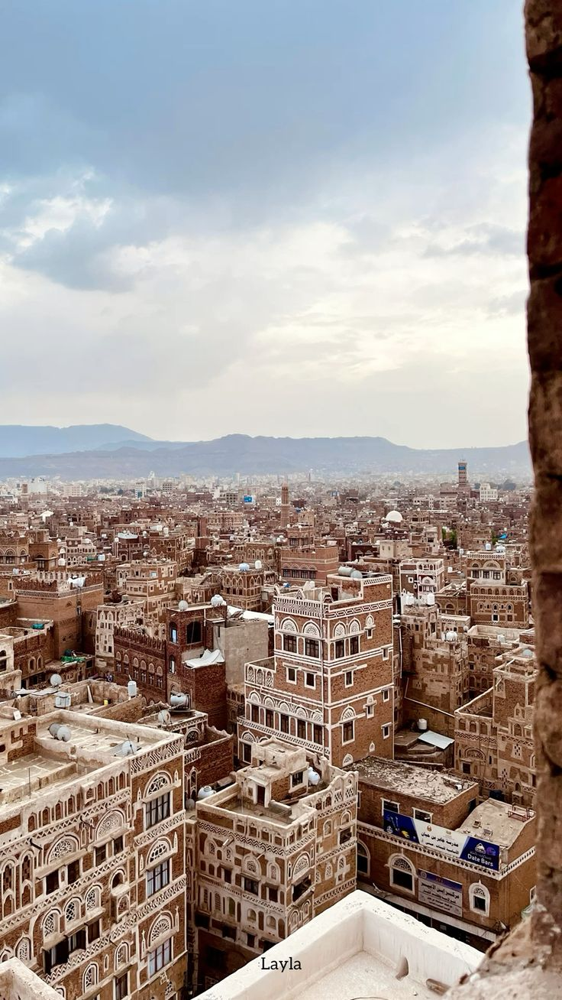
مدينة خضراء بين المدرجات الزراعية والجبال والضباب، وتتميز بطبيعة متنوعة.
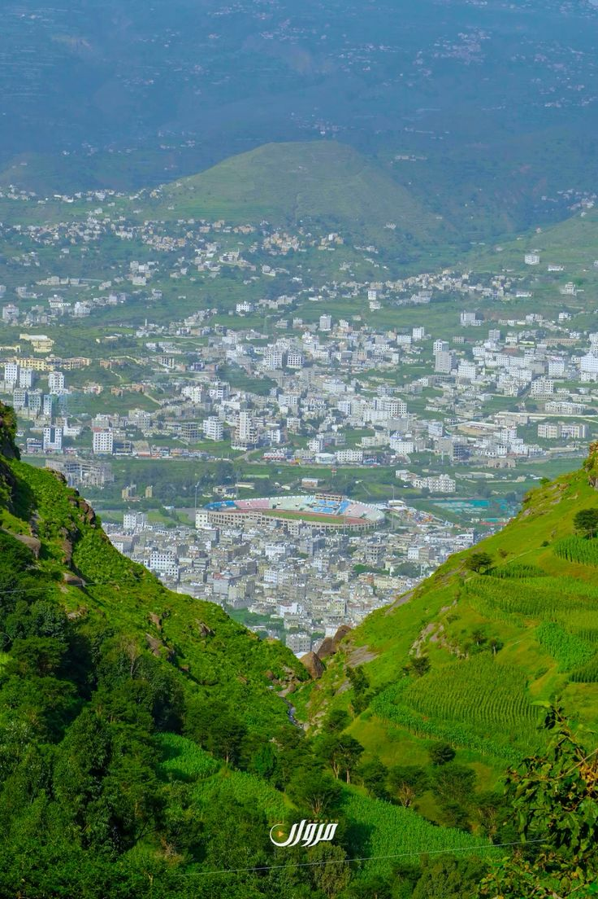
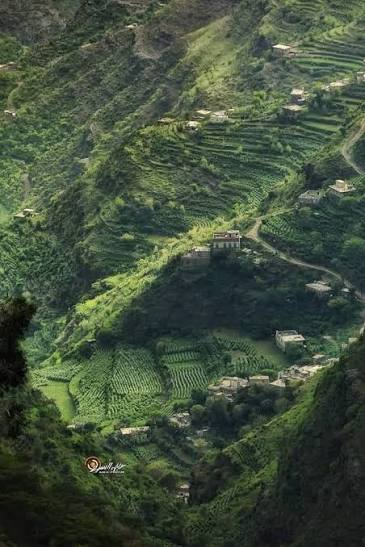
مدينة ساحلية تجمع البحر والجبال والمعالم التاريخية والتنوع الحضري.
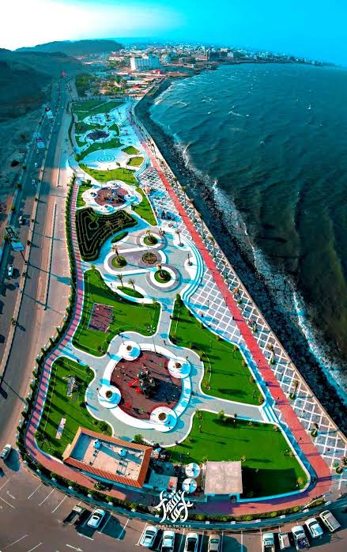
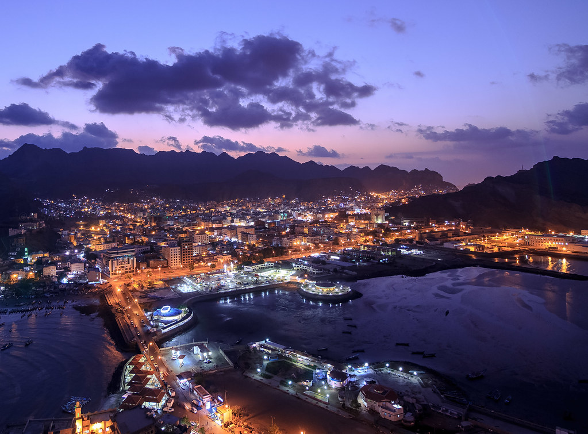
مدينة جبلية عريقة، تجمع التاريخ والثقافة والإطلالات الطبيعية.
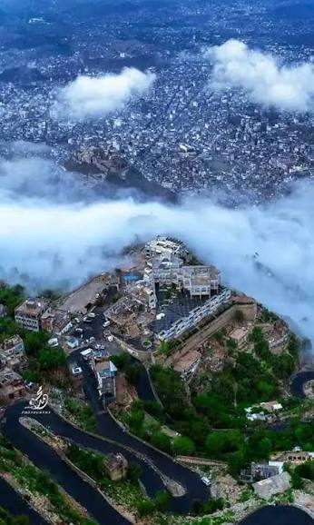
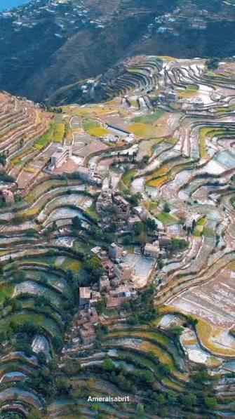
مدينة ساحلية على البحر الأحمر، معروفة بطابعها البحري وأسواقها وحياتها الساحلية.
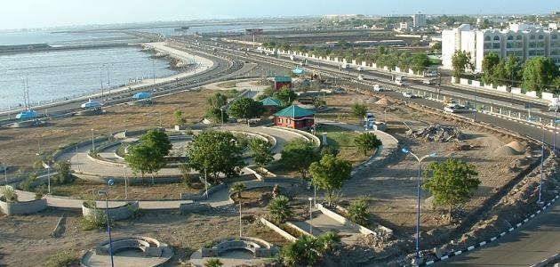
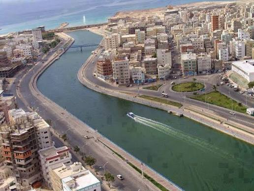
مدينة ساحلية تاريخية ارتبط اسمها منذ قرون بتجارة البن والموانئ.
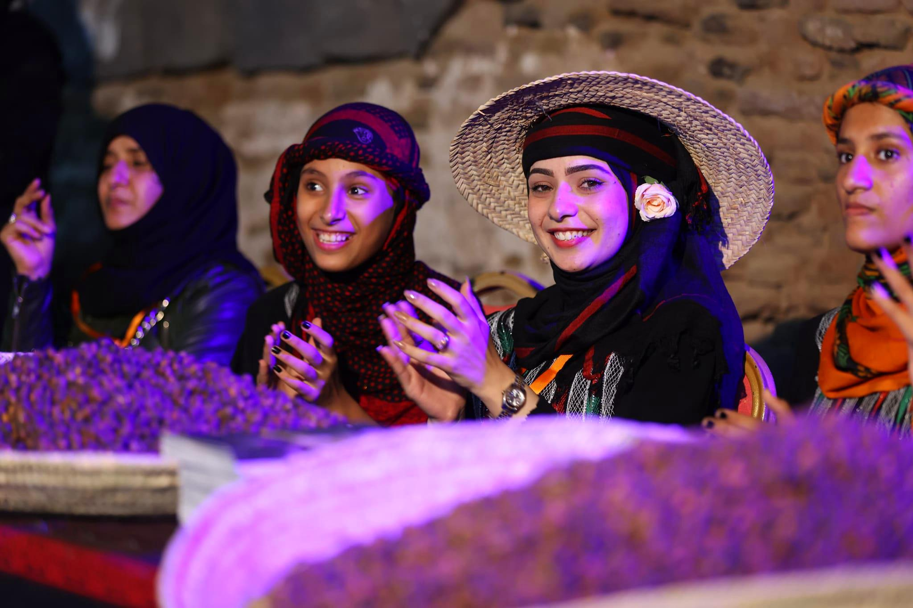
حضرموت، موطن مدن تاريخية وعمارة طينية مميزة، تمتد بين الوادي والساحل والصحراء.
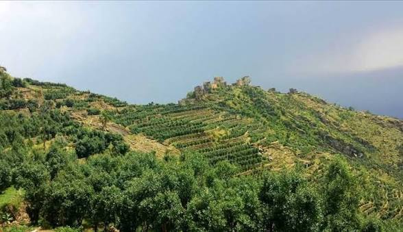
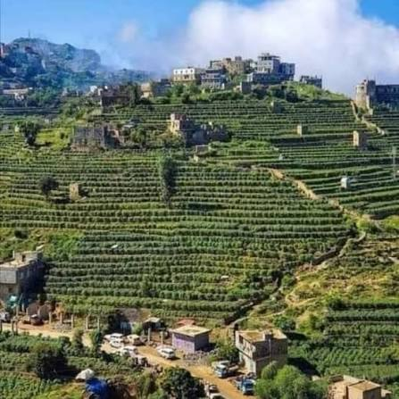
أرخبيل يمني ذو طبيعة فريدة وتنوع نباتي وحيوي لافت.
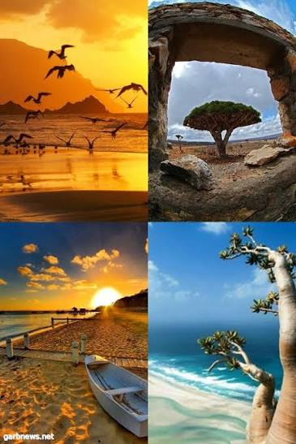
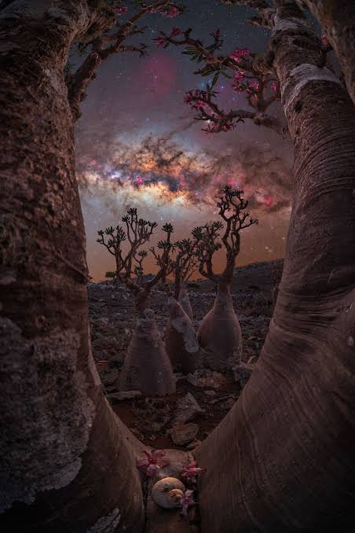
مدينة ذات حضور بارز في تاريخ اليمن القديم وترتبط بإرث سبأ وآثارها.
مدينة مرتفعة في وسط اليمن، تتميز بطبيعتها الجبلية وإرثها الثقافي.
مدينة شمالية ذات تاريخ طويل وعمارة تقليدية وهوية محلية مميزة.
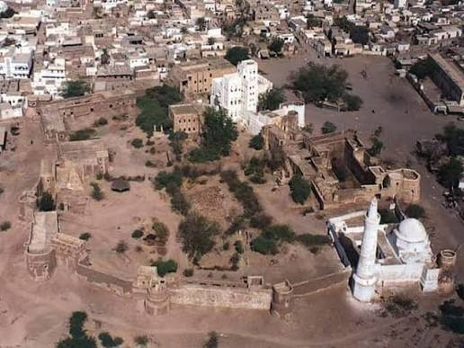
منطقة جبلية ذات تضاريس متنوعة ومدرجات زراعية ومشاهد طبيعية واسعة.
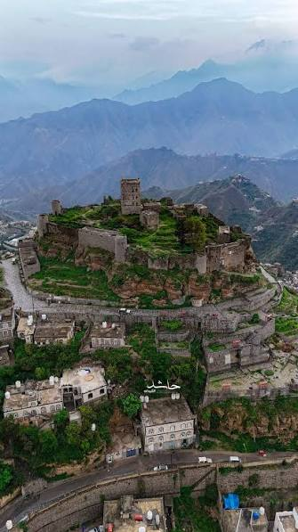
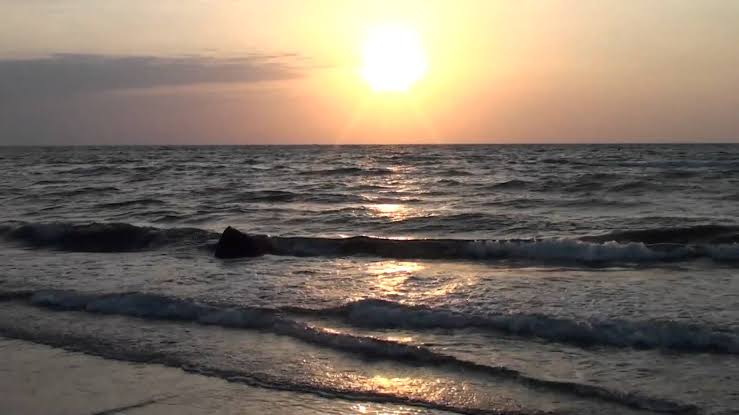
مدينة تاريخية عريقة ارتبطت بالعلم والعمارة والأسواق في تهامة.
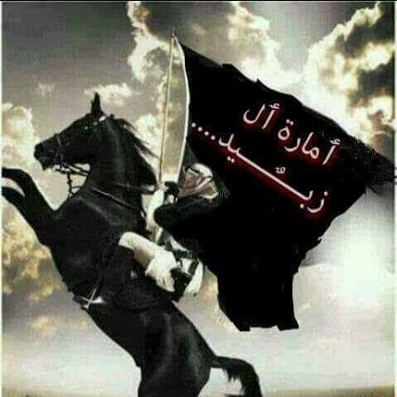
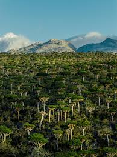
مدينة حضرمية شهيرة بعمارتها الطينية الشاهقة وتخطيطها الحضري المميز.
استكشف المدن الآن، واترك أقسام المعالم والطبيعة والثقافة للمحتوى القادم.